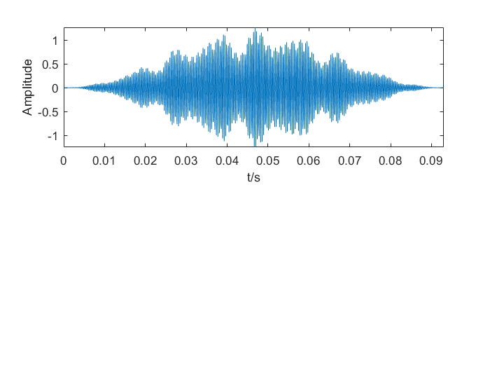
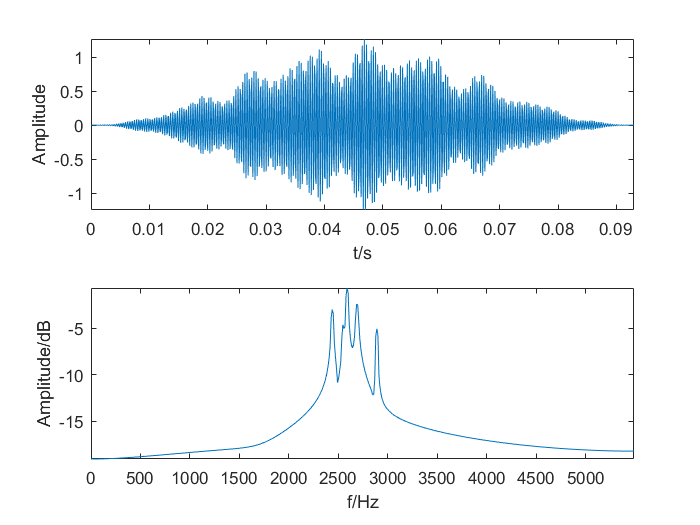

function[] = FFT_signal();
load('signal20.mat');
fs=Fs;
signal=signal20;
N=length(signal);
t=0:1/fs:N/fs-(1/fs);
signal=signal(1:1024);
t=t(1:1024);
N = length(signal);
t=0:1/fs:(N/fs)-1/fs;
NFFT=length(t);
signal=signal(:) .* hann(N);
S=fft(signal);
S=abs(S);
cutoff=ceil(NFFT/2);
S=S(1:cutoff);
S=S/cutoff;
S=log(S);
f=(0:cutoff-1)*fs/NFFT;
subplot(2,1,1);
plot(t,signal);
axis([min(t) max(t) min(signal) max(signal)]);
xlabel('t/s');
ylabel('Amplitude');

subplot(2,1,2);
plot(f,S);
axis([min(f) max(f) min(S) max(S)]);
xlabel('f/Hz');
ylabel('Amplitude/dB');

end